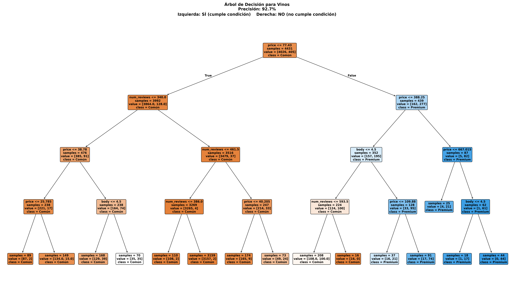

🌳 Árbol de Decisión
Precisión: 92.7%
Nuestro modelo de árbol de decisión revela las reglas fundamentales que gobiernan la clasificación de vinos premium. El algoritmo identifica patrones jerárquicos donde el precio emerge como el factor decisivo principal, seguido por el número de reseñas, creando un mapa de decisiones transparente y interpretable.
Insight Clave: Los nodos superiores del árbol
capturan las decisiones más críticas, demostrando que la
percepción de calidad está fuertemente correlacionada con el
valor económico y la validación social del producto.
